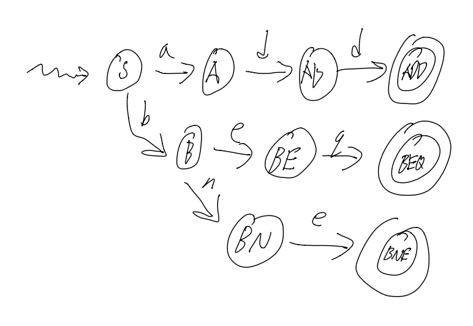
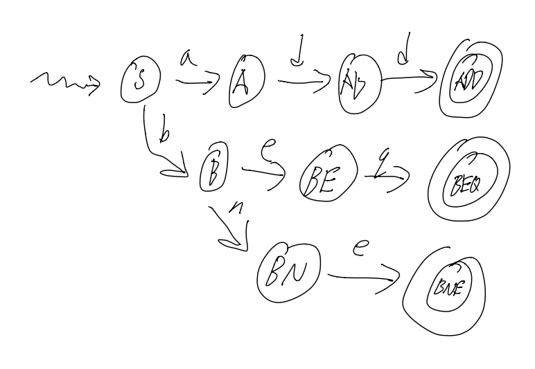
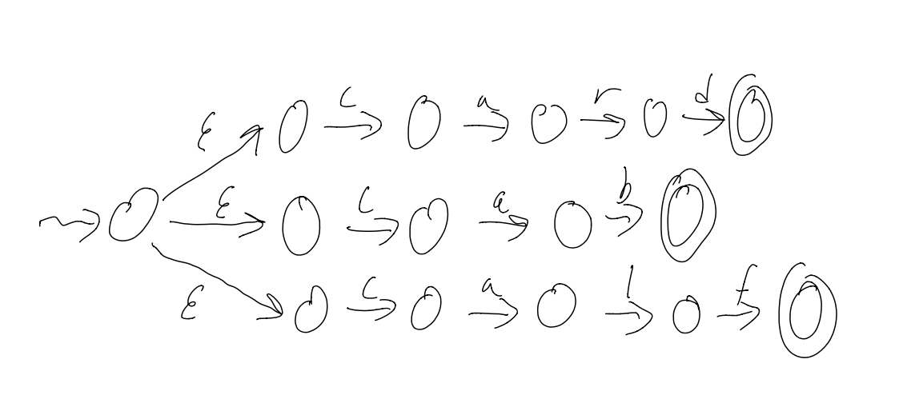
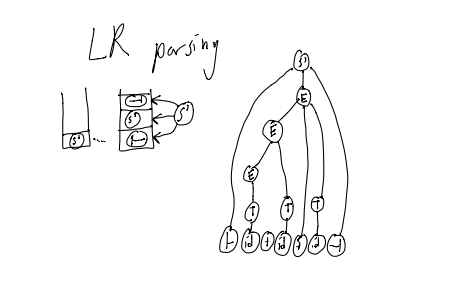
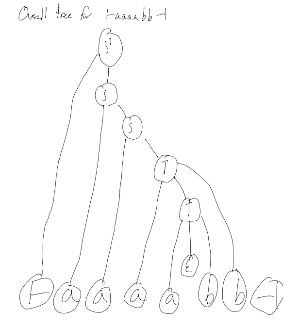

A DFA for a label (i.e: starts with letter, then any numberletter or number)

Images courtesy of Stephen Melinyshyn
<script>
(function(i, s, o, g, r, a, m) {
i[‘GoogleAnalyticsObject’] = r;
i[r] = i[r] || function() {
(i[r].q = i[r].q || []).push(arguments)
}, i[r].l = 1 * new Date();
a = s.createElement(o),
m = s.getElementsByTagName(o)[0];
a.async = 1;
a.src = g;
m.parentNode.insertBefore(a, m)
})(window, document, ‘script’, ‘//www.google-analytics.com/analytics.js’, ‘ga’);
ga(‘create’, ‘UA-58621690-1’, ‘auto’);
ga(‘send’, ‘pageview’);
These notes are far from complete and are quite porous compared to what’s been covered in class.
Copying code and diagrams off of powerpoints is hard in and of itself, but when the powerpoint slides start flying by, it becomes an impossible task.
Use these as a super rough outline of what we may have possibly covered in class, but do not use these as a primary set of study notes.
That said, the section regarding Formal Languages might be more complete.
Yours,
- Daniel Prilik
Oh boy! Here we go again!
The course website is www.student.cs.uwaterloo.ca/~cs241/
A note about Assignments:
The course uses our favorite program: Marmoset!
Marking breakdown:
So what is the purpose of this course:
By the end of this course, we will know what really happens when you compile and run a program, and there will be little to no mystery about what happens when you run a program.
In this course, all a computer is a CPU and RAM.
A CPU Controls and Manipulates the Data, and the RAM is just a bunch of addressed “boxes” that store Data.
All data is at a basic level is a sequence of 1s and 0s, or Bits
There are many interpretations for what a specific sequence of bits means (i.e: numbers, ascii, etc…), and there is no one “correct” interpretation.
There are certain sequences of bits that do in-fact have one specific meaning, or at least they do when it comes to how the machine interprets them. Depending on the Achitecture of the machine (i.e: Intel/Motorola, 32/64bit, etc…) there may be different bit sequences that mean the same things.
These codes are great for machines, super easy, just 0 = off, 1 = off, but they SUCKS for humans.
Assembly on the other hand, sucks less for Humans.
It is a simple, textual representation of machine language. It is more human readable, and makes development less, shall we say, absolutely terrible.
A big plus of assembly is that is it pretty easy to translate Assembly to Machine Code. Assembly is just an Abstraction.
The Assembler is the program that preforms the translation from Assembly to Machine Code.
What is a Bit exactly?
Well, it is just a value that can have 2 states, either 1, or 0. That’s it.
The nice thing is that a sequence of bits can describle a lot of different value.
We can use Bits to describle certain useful “types”:
Each sequence is just a direct representation of a number in base 2.
What if we want Negative Numbers? Well, then we have to use a more complicated code, called 2s compliemnt.
To get 2s compliemnt, we
So, With 3 bits, we can have the following interpretations for integers…
| Binary | Decimal | 2’s compliment |
|---|---|---|
000 |
0 | 0 |
001 |
1 | 1 |
010 |
2 | 2 |
011 |
3 | 3 |
100 |
4 | -4 |
101 |
5 | -3 |
110 |
6 | -2 |
111 |
7 | -1 |
** Notice that in 2s compliment, the left-most bit tells us if it is negative or not…
To hammer in this point, consider 1010.
What does it mean?
Well, nothing really, not until we know what type is should represent.
It is 10 if it’s an unsigned number, but it’s -6 in 2s compliment
Typically represented with 8 Bits
Eg: 00001010 is \n in ASCII (use the linux command man ascii for a full table)
In general, binary SUCKS to work with. Hexadecimal sucks less.
Essentially, we can represent numbers with 16 symbols, instead of just 1 and 0
We use the digits 0-9, A, B, C, D, E, and F.
A nice property of Hexadecimal is that it is easy to convert into Binary, and vice versa.
You just split the binary number into chunks of 4 bits, and then write the digit associated with each chunk.
Eg: 1010 1111 1001 1001 = xAF99
The most common grouping of bits is in a byte, or a group of 8 bits
There are 256 possible values that can be encoded by 8 bits. What to encode however, is up to interpretation (see above)
Files are just long sequences of bytes, and it is up to a program to determine what the byte sequences actually mean.
The command cat for example, will interpret any file thrown at it as Text, and print out each byte as a ASCII char.
The command xxd on the other hand, will print the file’s bits as hexadecimal values (alongside an ascii interpretation of the bits)
So, for example, if there is a file hasY with string Y\n, then the output of xxd would be something like:
#Addr #Hex #Ascii
00000000: 590a Y.
59 is the hex code for Y in ascii, and 0a is the hex code for the Newline Char in ascii
A Word is a grouping a bits that a specific CPU “likes” (i.e: can easily do math on, execute ops, etc…)
Words can be any number of bits… from 8 bit in the 80s, all the way to 64 bit nowadays.
NOTE: a CPU’s specific word-size will limit the total ammount of memory a CPU can ever see! For example, 32 bit CPUs could only address ~3.5gigs of memory, so until the switch to 64 bit CPUS, no matter how much RAM you shoved in a PC, if the OS was 32bit, it couldn’t see more than 3.5gigs
The machine we are using in cs241 is a Stored Program Computer
What this means is that the CPU is connected to the Memory (via a “mem bus”) not just to use the memory as a place to store data, but also as a place to store actual program code.
To run a program, the CPU calls the memory for an instruction, and the memory returns a string of bits that (should) correspond to a instruction that the CPU can execute.
CPUs are not actually just magic boxes. They have things within them that make them work…
There are several places to Store things
And there are other places that Do things
RAM is really just a giant block of “boxes” that can store bytes, starting from 0 to denote the 1st byte, 4 to denote the 5th byte, etc…
On a MIPS machine, words are 4 bytes, and as such, when addressing the RAM to ask for instructions, we must ask for words, so we address RAM in increments of 4.
MIPS is a set of instructions that our processor understands.
In this course, there are 18 different 32-bit (4 byte) instructions encoded in 2 basic instruction formats.
MIPS assembler is the Assembly Language that translates human-readable instructions into the actual 32-bit / 1 word instructions that the CPU can read.
For example:
add $1, $2, $3 are MIPS instructions that correspond to…0000 0000 0100 0011 0000 1000 0010 0000 when converted to Binary, or 0x00430820 when written in HexThat binary actually means the following…
000000 ; Call the ALU
00010 ; $2
00011 ; $3
00001 ; $1
00000100000 ; Add
A full list of MIPS instructions can be found here: https://www.student.cs.uwaterloo.ca/~cs241/mips/mipsref.pdf
The instruction lw loads a word from memory, and sw stores a word to memory
Eg: lw $7, 0($3) will load the value at MEM[$3] into register $7
Eg: sw $8, 4($3) will load the value from $8 to MEM[$3+4] (that +4 is needed since we store Words in memory, and Words are 4 bytes each)
Every single clock cycle, the following happens:
1) Fetch a word from RAM whose address is in the PC (the PC is initialized to 0 on power-on)
2) Place that word in the IR
3) Increment the PC by 4
4) Decode and Execute the instruction that is in the IR
| Register | Description |
|---|---|
$0 |
Constant value 0 |
$29 and $30 |
Stack (see below…) |
$31 |
The Return Address (RA) |
There is a 1 to 1 correspondance b/w Assembly Language and Machine Language. It translates human-friendlier mnemonic instructions like add $3, $1, $2 to their related bit form. The Assembler is the program that does this automatic translation.
For some example of Assembly Code and the Machine Language equivilents, see the cs241 website.
Labels identify an address.
; some stuff
loop: add ...
; more instructions...
bne $2, $0, loop ;using label
X: Y: ; can have 2 labels on the same line
What happens if we call a subroutine where it uses some registers, that you need! We only have $32 registers after all!
Consider this example below
; Example 6a: Calling a procedure
sw $31, −4($30) ; save $31 on stack
lis $31
.word 4
sub $30, $30, $31
lis $1 ; call sumOneToN(13)
.word sumOneToN
lis $2
.word 13
jalr $1
lis $31 ; restore $31 from stack
.word 4
add $30, $30, $31
lw $31, −4($30)
jr $31 ; return to OS
;------------------------
; Example 6b: A procedure
; sumOneToN: sum the integers from 1 to N
; input: $2 is N
; output: $3 is the sum
sumOneToN:
sw $1, −4($30) ; save $1 on stack
sw $2, −8($30) ; save $2 on stack
lis $1
.word 8
sub $30, $30, $1
add $3, $0, $0 ; clear $3
beginLoop:
add $3, $3, $2 ; add $2 to $3
lis $1 ; decrement $2
.word −1
add $2, $2, $1
bne $2, $0, beginLoop
lis $1
.word 8
add $30, $30, $1
lw $1, −4($30) ; restore $1 from stack
lw $2, −8($30) ; restore $2 from stack
jr $31 ; return from sumOneToN
In general, Stack usage rules are:
sw
sw
...
sub $30, $30, 4.n
[body]
add $30, $30, 4.n
lw
lw
jr $31
Here is an example of recursion
; Save $31 on the stack
sw $31, -4($30)
lis $31
.word 4
sub $30, $30, $31
; Call recSum(13)
lis $4
.word recSum
lis $1
.word 13
jalr $4
; Restore $31 from the stack
lis $31
.word 4
add $30, $30, $31
lw $31, -4($30)
; Return to OS
jr $31
;-----------------------
; recursively sum up the integers from 1 to N
; assume that input (N) is in $1
; output is returned in $3
recSum:
; Save registers on the stack
sw $1, -4($30)
sw $2, -8($30)
sw $4, -12($30)
sw $31, -16($30)
lis $4
.word 16
sub $30, $30, $4
; Initialize sum so far
add $3, $0, $0
; Check to see if we are in the base case (N=0)
beq $1, $0, done
; Otherwise, we must compute the sum of the current N
; and the sum of the rest
; keep a copy of the current value of N
add $2, $1, $0
; put N-1 into register $1
lis $4
.word 1
sub $1, $1, $4
; get ready to call routine (i.e., ourself)
lis $4
.word recSum
jalr $4
; add the value we got back to the current value of N (in $2)
add $3, $3, $2
done:
; restore registers
lis $4
.word 16
add $30, $30, $4
lw $1, -4($30)
lw $2, -8($30)
lw $4, -12($30)
lw $31, -16($30)
jr $31
In general, the template for recursion in MIPS is roughly:
First pass = make an intermediate representation
Second pass = make actual ML code
Syntax = form / structure (col 2 of MIPS ref sheet)
Asm lang syntax goes in, ML lang syntax comes out
Semantics = “meaning” (col 3 of MIPS ref sheet)
What do instructions actually “do”
Location and Labels (col 4 of MIPS ref sheet)
Location = “where I am”
Label = “where I want to be”
Must generate
1) an intermediate representation
2) a symbol table
Tokenization (not neccesary, but probably the best intermediate representation
add $3, $1, $7 => <ADD><REG><COMMA><REG><COMMA><REG>There is no “hard and fast” rules for what a IR can be.
It can be anywhere from
Stores the address and the name of each label definition
The following code has the following Symbol table
0x00 misery: beq $0, $7, happy
...
0x0C beq $7, $12, misery
...
0x1C happy: add $3, $3, $3
| name | address |
|---|---|
| misery | 0x00 |
| happy | 0x1c |
Takes the IR and ST, and combines them into valid machine code
Given 0x0C beq $7, $12, misery, and that misery is at 0x00
from the MIPS reference sheet, we know beq has format 0001 00ss ssst tttt iiii iiii iiii iiii, where i is an Offset from the current PC!
Thus, we must encode those i‘s to have a value of -16, to move the PC back to 16
Look for patterns!
For example: ADD and SUB have instructions that are almost the same! They only differ by 1 bit!
There are plenty of these, so don’t forget to write DRY code
For large programs, there will be a huge symbol table, and there must be a way to have quick and efficient access to it.
Symbol Tables are just (key, val) pairs, with the key being the label string, and the value being an integer representing the address of the label
So, TL;DR, use a Hash Map / Dictionary
Check for Duplicate Label Definitions (i.e: same label for 2 different addresses)
Check for Label Syntax
Check basic Syntax
asddsa fgdfg ,,; is invalidConsider beq $3, $4, notALabel
We can’t jsut throw this instruction out in Pass 1, as notALabel might be defined later. Only in Pass 2 can we throw a “label undefined” error
This is a Semantic Error
Consider lw $3 4($30)
This will throw a Syntax error
Consider lw $3, 4($30
Consider lw lw $3, 4($30)
These will all throw Syntax error
Consider lv $3, 4($30)
This will thow either a “invalid instruction” error, or a “Syntax error”
Consider lw $3, 4($32)
This will throw a Semantic error, since register $32 doesn’t exist
Consider lw $3, 44444444444444($30)
This will throw a Semantic error, since that number is out of the 16 bit bound, and can’t be encoded in the instruction
Consider $3, 5($30)
This might throw a Semantic error, since 5 is not a multiple of 4 (but i might not, if the multiplication between $30 and 5 is actuall a multiple of 4)
Easier to check validity of instruction, than the invalidity of the instructions.
The assembeler we write will output literal bits, NOT ASCII chars!!
That means that the assembler will make heavy use of the bitwise operators, like &, |, <<, >>, etc…
Output is still to STDOUT, but use putchar
On the Assignment 3/4 page, you can download asm.c / asm.cc / asm.rkt, that will provide a significant ammount of helpful boilerplate code to jumpstart your assembler development.
Slowly.
With a lot of tests.
Like, a LOT of tests.
Like a SHITTON of tests.
Like an UNREASONABLE AMMOUT of tests.
Test your assembler against cs241.binasm.
Generally, we don’t run our programs by loading them at addr. 0. Usually, we have an OS loaded before us that then
a) delegates RAM to programs,
b) copies those programs to that point in ram,
c) executes them.
In pseudocode, the loader does the following:
loop
decide what program to run
figure out the length of the program (n)
find n words of storage at some address (a)
read program into memory at a
set up program (e.g: mipstwoints)
put a into a register (say $19)
jalr $19
end loop
To get the size of the program we want to load, we actually have to store the size of our program with our program (this is because of the chicken and egg problem of having to load a program into RAM to find it’s size, but we need it’s size to load it into RAM)
Another issue is that the loader itself is a program, so who loads the loader?
Well, a Microloader loads the loader.
Who loads the Microloader?
The Firmware / BIOS
It’s turtles all the way down.
(this is called Bootstrapping)
I missed the next bit of the lecture, so get ready for some pretty disjointed notes.
Header cookie (1 word: beq $0, $0, 2 (0x10000002))
Length of the .merl file (1 word)
Length of program + header (1 word)
Program code (A3 + A4)
Notes of what to change (Relocation entries: .word 1 .word <loc>)
- i.e: which registers link to other registers that would have to have a mem-offset added to them
See full description on the CS241 website
.word <label> instruction, write down it’s location in the relocation tableread header
a = findFreeRAM(codeLength)
for each instruction:
MEM[a + i] = instruction
for each relocation entry
MEM[a + location] += a
place a into $19
jalr $19
Code
A: .word B
B: .word 7
C: .word 0xA
D: .word C
Symbol Table
| Symbol | Address |
|---|---|
| A | 0x0C |
| B | 0x10 |
| C | 0x14 |
| D | 0x18 |
Relocation Table
| Relocations |
|---|
| 0x0C |
| 0x18 |
The Merl File:
; Header
0x10000002
0x0000002C
0x0000001C
; Program Code
0x00000010
0x00000007
0x0000000A
0x00000014
; Relocation Entries
0x00000001
0x0000000C
0x00000001
0x00000018
Linkers take distinct programs, and smush them together into one package.
This is useful to create reusable components of code, and allow other code to to them.
https://www.student.cs.uwaterloo.ca/~cs241/slides/LinkerHandout.pdf
https://www.student.cs.uwaterloo.ca/~cs241/slides/LoaderHandout.pdf
concatenate the (merl) programs
construct the ESD
use ESR
Relocate (internally)
Static Linking Example
Dynamic linking example
That’s all for MIPS btw
{}Word (aka strin, sentance): a finite sequence of symbols from the alphabet
Language: a set of words
A statement of what a language is should be
We can use these specifications to Determine if a word is in a language
Let’s formally specify WLP4 “WooL P Four” = “Waterloo, Language, Plus, Pointers, Plus, Procedures”
There is a full language specification the main course web-page: https://www.student.cs.uwaterloo.ca/~cs241/wlp4/WLP4.html
Language classes are sets of languages that may share common characteristics
As we move down the chompsky hierarchy, we move up in power of expressiveness, but also complexity
lw) offsets.word <int> or .word <hexint>).word <label>)There are several basic building blocks that we use to specify Regular Languages:
You can always build off an existing finite language
Formally Defined:
Simply: Make a new set containing all the elements of both sets (with each element appearing only once)
Formally Defined:
Example:
Formally Defined Recursively (Kleene closure):
Alternate Definition (Iterative):
(In general):
Examples:
Regular Languages can be recognized by Finite Automota
We begin with deterministic finite state automata (DFAs)
DFAs must have the following:
state A AND read input state BA DFA for some MIPS instruction

A DFA for a label (i.e: starts with letter, then any numberletter or number)
Images courtesy of Stephen Melinyshyn
Input: A word
Output: true if accepter, false if rejected
state = q0
for i in 1..n:
state = delta(state, wi)
return (state in A)
We need to implement the transition function somehow… but how?
Option 1: if statements?
if state == state1:
if input == a: ...
else if input == b: ...
...
else if state == state2:
if input == a: ...
...
...
NO. THIS IS A TERRIBLE IDEA.
Option 2: Dictionary: key = (state, input), value = state
L = {bba, baa, bbaa, bbbaa, bbbbbaa, …} (wich is either 2 b’s followed by an a, or 1 or mote b’s bollowed by 2 a’s)
If we try to derive this using a DFA, it is pretty unweildy, and grows pretty large. Moreover, it is hard to see what the DFA recognises at a glance… TL;DR: It works, but it’s ugly.
On the other hand, if we do this with an NFA, it becomes a lot clearer.

NFAs can be in 2 different states at the same time!
NFAs allow multiple transitions out of one state on the same input
It’s the same as DFA with the following change:
In english: We can be in a Set of States, and this T is a relation instead of a function
2q is the Powerset of Q
if Q = {a,b,c} then 2q = { {},{a},{b},{c},{ab},{ac},{bc},{abc} }
Note: |2Q| = 2|Q|
Input: a Word
Output:
Pseudocode:
states = {q_0}
for i in 1..n:
states' = {s' | s' in T(s,w_i) for all s in states}
states = states'
return (states) instersected with (Accepted States) =/= {}
Essentially, we have to track an array of possible states we are in. That’s all.
With C++, we are lucky enough that STL provides us with methods like:
- Intersection
- Union
- Membership
- Iteration
BUT these are NOT constant time operations.
Luckilly, we can improve preformance by using a Bit Vector
i.e: Say we have 8 states, and we have a byte like 10101100, that means we are currently in sates 3,4,6,8
Using bit vectors lets us use bytewise operations to do intersection, union, etc… but we have to deal with bitshifting :D
NFAs can be smaller than DFAs for the same language
NFAs can be in multiple states at the same time
DFAs are easier to implement due to one variable (the current variable)
NOTE: The two are equivalent in the languages they recognize.
i.e: you can always write a DFA from an NFA and you will have to on the midterm
Also, all DFAs are valid NFAs.
Scanner = tokenization, and indeed, if you look at the source code given for the asm assignment, you can see an implementation of a tokenizer thant uses DFAs.
Allow transitions between states on “no input”
Can be used as “glue” for joining machines together
Example: L = {card, cab, calf}

Converting a
There are a few ways to do this:
1) take shortcuts:
2) Pull back accepting states
3) Remove
4) Remove dead states (states that we can never get to)
Defined recursively: a Regular Expression (RE) is:
And there is an Order of Precendence for the last 3:
1) Repetition
2) Concatenation
3) Alternation
L = {cab,car,card},
We can make a Regex for this langauge in different ways:
— cab|car|card or
— ca(b|r(d|
L = {w | w contains an even number of a’s},
— (aa)*
L = {w | w contains an even number of a’s},
— b*(ab*ab*)*
Most Regex “engines” accept the following shorthands as valid syntax:
- [a-z] translates to a|b|c|…|z (the english alphabet)
- E+ translates to EE* (1 or more)
- E? translates to (E|epsilon) (zero or one)
There are plenty more!
We convert REs to
To concatenate E1 and E2 (making E1E2):
1) Add epsilon transitions b/w the end states of E1 and the start state of E2
2) Make the end states of E1 into regular states (we don’t want to accepts just E1 valid things anymore)

To make an alternation between E1 and E2 (making E1|E2):
1) Add a external start state that has an epsilon transition to both start-states of E1 and E2

To make a repetition from E1 (making E1*):
1) Add epsilon transitions b/w the end states back to the start state.
2) Make the start state an acceptance condition (to allow for no input)

We can take these
A Regular Language is a language which is either:
- specified by a Regular Expression
- recognized by an
- recognized by an NFA
- recognized by a DFA
Note: all of the above can be converted to any other one
Most real-world examples do not care about recognizers (DNA match may be an exception)
Mostly, DFAs are used for:
- transforming / transducing input
- searching in text (the most common use of Regex)
- scanning / translating
A transducer is a DFA with output, that is, transitionslook like input/output vs just input
Example 1:
Removing stutters from
So, aaabbaa -> aba, or baabbbb -> bab

Recall that there can be 2 types of Transducers: Moore Machines and Mealy Machines.
Moore machines output on leaving a state, Mealy machines output on transition
Notice how this is very similar to ECE-124…
Sometimes, it is easy to translate an input into an output:
Input: add $1, $2, $3
Output: <ADD><REGISTER><COMMA><REGISTER><COMMA><REGISTER>
But what if we get something like this?
Input: 0x1234abcd
The output can be (theoretically be) both:
Out1: <HEXINT>
Out2: <INT><ID><INT><ID>
How to we ensure we only get option 1?
Well, we use the following algorithm.
Input is a word c1c2…cki is the index of the current character
i = 0
state = START
loop
newstate = ERROR
if i < k:
newstate = transition(state, c[i])
if newstate == ERROR:
if state is not a final state:
report error and exit
if state is not WHITESPACE:
output appropriate token
state = START
if i <= k:
exit
else:
state = newstate
i = i + 1
TL;DR: consume as much of the string in the current state as possible.
There are 4 steps to compiling code:
1) Lexical Analysis
2) Syntactic Analysis
3) Context-sensitive (semantic) analysis
4) Synthesis (code generation)
Other points:
- Staging can improve error messages, (staging means using the “right tool for the job”)
- Doing extra work at an early stage is possible, but may be over complicating.
- Basically, have seperate programs in a pipeline:
Input -> SCAN makes tokens -> PARSE makes parse tree -> CODEGEN makes MIPS code
What if we wanted to make a DFA over
It’s impossible! It’s infinite! No Deterministic Finite Automota can be Infinite!
In this case, L is not a regular language, it is context-free!
These langauges are important to compilers for doing things like matching brackets, where we need to know that there is the same ammount of 2 different chars.
Context-Free Languages are built from:
Recognizers for regular langauges use a strictly finite ammount of memory
All it has to do is Remember the current state, and have a list of all the states with transitions.
Recognizers for context-free langauages use a finite ammount of memory AND one (unbounded) stack
(DFA + Stack <=> Parser)
Grammars are a way to specify Context-Free langauges.
So, for example, here is a CFG: (S is start state)
1. S -> aSb
2. S -> D
3. D -> cD
4. D -> epsilon
These are called production rules, and together they make a specific grammar G.
One such word that arises from these rules is accb
S =1=> aSb =2=> aDb =3=> acDb =3=> accDb =4=> accb
G = A context-free grammar (CFG)
L(G) = Set of words specified by G (i.e: the langauge specified by G)
a word = Sequence of tokesn that can be derived by G
a derivation = Sequence of rewriting steps from G (informally)
alternation = S -> aSb or S -> D
concatenation = aSb
recursion vs repetition = S -> aSb
A context-free grammar (CFG) consists of:
So, from the example:
Example Words: (), (()), ()(), …
CFG:
1. B -> (B)
2. B -> BB
3. B -> epsilon
Sample Derivation of (()()):
B
=1=> (B)
=2=> (BB)
=1=> ((B)B)
=3=> (()B)
=1=> (()(B))
=3=> (()())
Words are composed of binary numbers (no leading zeros, other than 0) with + or - signs in infix notation
Example words: 1001, 10+1, 11-11110+0, …
CFG:
let E = expression
let B = binary number
let D = non-zero binary number
1. E -> E + E
2. E -> E - E
3. E -> B
4. B -> 0
5. B -> D
6. D -> 1
7. D -> D0
8. D -> D1
Sample Derivation of 10 + 1
E
=1=> E + E
=3=> B + E
=5=> D + E
=7=> D0 + E
=6=> 10 + E
=3=> 10 + B
=5=> 10 + D
=6=> 10 + 1
This is called a Leftmost Derivation, since we always operate on the leftmost symbol. Rightmost is the opposite.
We say that
We say that
Formally:
When there are two or more non-terminals which can be rewritten in a derivation, we pick the left-most/right-most non-terminal for rewriting
Note: there are derivations which are neither left-most or right-most
In a regular language, to prove a DFA M accepts a word W, we could give the sequence of states visited (but this is not often done as a proof)
In a context-free langauge, to prove w is in a CFG G, we list our derivation steps as our “proof”
Example: 10+1
E
/ | \
E + E
| |
B B
| |
D D
| \ |
D 0 1
|
1
Leaves are the terminals of our CFG
The root is the start S
This tree encapsulates all possible derivations of 10+1 in this grammar
“Recursive Descent Parsing” / “Syntax Directed Translation” is when you compute the value of children to compute the value of their parent
10+1 means 3 (= 2 1)
D -> 1 means D.val = 1
D_1 -> D_20 means D_1.val = D_2.val * 2
E_1 -> E_2 + E_3 means E_1.val = E_2.val + E_3.val
A real-world example of ambiguity would be “Sally was given a book by Joyce”. Does this mean that Joyce gave Sally a book, or Joyce wrote the book Sally was given?
Formally:
A String x is ambiguous if
A CFG G is ambiguous if some word
Consider the binary expression grammar, and the string 1-10+11
There are two possible trees depending on if you apply rule 1 or rule 2 first!
Some terminology for Ambiguity:
A Grammar is ambiguous if there is a word x such that x has:
-
-
-
Let’s rewrite our binary expression grammar differently:
Instead of rules 1 and 2 being
1. E -> E + E
2. E -> E - E
We can rewrite them as:
1. E -> B + E
2. E -> B - E
When there is both Left and Right recursion in one rule, ambiguity is introduced.
The string 1-10+11 means 1-2+3 == (1-2)+3 = 2
In our current grammar, if we try to use Recursive Descent Parsing to calculate the value of our expression from our parse tree, we actually end up with the incorrect answer -4, since our parse tree would result in the incorrect associativity of 1-(2+3)
To fix this, we need to once again change our first 2 rules…
The rules
1. E -> B + E
2. E -> B - E
result in right associativity since they are right-recursive
To fix these rules, we have to make rules 2 left associative
1. E -> E + B
2. E -> E - B
What if we wanted to add multiplication to our grammar?
Maybe it’s as easy as adding the rule E -> E * B?
Well, consider 1*10+11… that works out nicely.
Things fail when we then try 1+10*11, since we will eval the + before the *!
Nearer to the root -> later evaluation -> lower precedence
Let’s add some rules:
let S = Sum (new start state)
let P = Product
1. S -> S + P
2. S -> S - P
3. S -> P
4. P -> P * B
5. P -> P / B
6. P -> B
7. B -> 0
8. ...
With these rules, our first expansion nearer to the top of the tree would be addition, and only later on would we expand products (thereby evaling them first)
Why?
Because.
I didn’t copy the example because my laptop battery died.
Just trust me, they are.
Given a grammar G and a word w,how can we find a derivation for w?
There are 2 strategies:
1) Top Down: Find a non-terminal and replace it with the right-hand side of a rule (what we have been doing, eg: S => S + P => B + P)
2) Bottom Up: Replace a right-hand side with a non-terminal (eg: B + B * B => B + P)
In both strategies, we have to make the correct decision at each step.
This works, but is not practical. It is exponential time wrt the number of rules…
There are 2 different, better O(n) algos
For top-down parsing, we use a stack to remember information about our derivations and/or processed input
Recall that a Context-free language can be recognized with a finite control (DFA) and one stack
EG: balanced parens:
- ( = push
- ) = pop
If the stack is non-empty at the end, then there is a faliure.
Empty words and stacks can cause hassles
We augment our Grammars by adding “beginning” and “ending” characters
1. S' -> <START>S<END>
2. S -> AyB
3. A -> ab
4. A -> cd
5. B -> z
6. B -> wz
Invariant: Derivation = input already read + stack (read from top to bottom)
Example of <START>abywz<END>
| Derivation | input read | input to read | stack | actions |
|---|---|---|---|---|
S' |
<START>abywz<END> |
S' |
Rule 1 | |
<START>S<END> |
<START>abywz<END> |
<START>S<END> |
match <START> |
|
<START>S<END> |
<START> |
abywz<END> |
S<END> |
Rule 2 |
<START>AyB<END> |
<START> |
abywz<END> |
AyB<END> |
Rule 3 |
<START>abyB<END> |
<START> |
abywz<END> |
abyB<END> |
match a |
<START>abyB<END> |
<START>a |
bywz<END> |
byB<END> |
match b |
<START>abyB<END> |
<START>ab |
ywz<END> |
yB<END> |
match y |
<START>abyB<END> |
<START>aby |
wz<END> |
B<END> |
Rule 6 |
<START>abywz<END> |
<START>aby |
wz<END> |
wz<END> |
match w |
<START>abywz<END> |
<START>abyw |
z<END> |
z<END> |
match z |
<START>abywz<END> |
<START>abywz |
<END> |
<END> |
match <END> |
<START>abywz<END> |
<START>abywz<END> |
ACCEPT! |
Observations:
How do we apply these rules? What does expand mean?
Use a rule: pop stack (LHS) or Push RHS (in reverse)
How do we know when we are done?
Accept when the stack is empty and the input is empty, reject otherwise
how do we know which rules to use?
Crystal ball?
We need: Predict(A,x) = A -> a so long that:
1) A is on the top of the stack
2) x is the first symbol of input to be read
Where A is non-terminal (in N), and x is terminal (in T).
Definition of an LL(1) Grammar:
For all
Meaning of LL(1):
L - left-to-right input
L - leftmost derivation
(1) - one token of “look ahead” (in terms of input)
Recall the CFG:
1. S' -> <START>S<END>
2. S -> AyB
3. A -> ab
4. A -> cd
5. B -> z
6. B -> wz
Let “.” be an error
COLS are input (x). ROWS are non-terminating chars (A)
| a | b | c | d | y | w | z | <START> |
<END> |
|
|---|---|---|---|---|---|---|---|---|---|
| S’ | . | . | . | . | . | . | . | 1 | . |
| S | 2 | . | 2 | . | . | . | . | . | . |
| A | 3 | . | 4 | . | . | . | . | . | . |
| B | . | . | . | . | . | 6 | 5 | . | . |
Adding a new rule is easy!
Let’s add B -> epsilon
We just change ROW:B - COL:<END> from an error to using rule 7
Below:
Empty(
can
First(
starting from
Follow(
starting from the start symbol, does the terminal y ever appear following a non-terminal A?
Predict(A,x) = { A ->
Input: w
push S'
for each x in w:
while (top of stack is some A in N):
pop A
if Predict(A,x) = {A -> a}:
push a
else:
reject
pop c
if c != x:
reject
accept w
Consider the grammar:
1. S -> ab
2. S -> acb
We cannot tell if we should use rule 1,2 in the case where we have an S followed by a a.
If we could look ahead 2 chars, we would be able to tell…
We can actually conver this grammar into an LL(1) by changing the rules to
1. E -> aX
2. X -> b
3. X -> cb
L = {anbm | n >= m >= 0}
Grammar (ambiguous):
1. S -> epsilon
2. S -> aSb
3. S -> aS
Grammar (unambiguous):
B is "balanced a and b"
U is "unbalanced a and b"
1. S -> B
2. S -> U
3. B -> epsilon
4. B -> aBb
5. U -> aB
6. U -> aU
This language is actually not LL(k) for Any k!
In LL/top-down parsing we have
- input processed + stack = current derivation
- note that the stack is read from top to bottom
In LR/bottom-up parsing on the other hand, we hace
-stack + input to be read = current derivation
-stack is read from bottom to top
<START>abywz<END>| Derivaiton | Stack | Input Read | Unread Input | Action |
|---|---|---|---|---|
<START>abywz<END> |
<START>abywz<END> |
Shift <START> |
||
<START>abywz<END> |
<START> |
<START> |
abywz<END> |
Shift a |
<START>abywz<END> |
<START>a |
<START>a |
bywz<END> |
Shift b |
<START>abywz<END> |
<START>ab |
<START>ab |
ywz<END> |
Reduce A -> ab |
<START>Aywz<END> |
<START>A |
<START>ab |
ywz<END> |
Shift y |
<START>Aywz<END> |
<START>Ay |
<START>aby |
wz<END> |
Shift w |
<START>Aywz<END> |
<START>Ayw |
<START>abyw |
z<END> |
Shift z |
<START>Aywz<END> |
<START>Aywz |
<START>abywz |
<END> |
Reduce B -> wz |
<START>AyB<END> |
<START>AyB |
<START>abywz |
<END> |
Reduce S -> AyB |
<START>S<END> |
<START>S |
<START>abywz |
<END> |
Shift <END> |
<START>S<END> |
<START>S<END> |
<START>abywz<END> |
Reduce S' -> S |
|
S' |
S' |
<START>abywz<END> |
ACCEPT |
Shift: moving a token from one place to another (push)
Reduce: size of the stack may be rediced (pop RHS, push LHS)
Somehow we shifted at just the right time, and reduced just at the right time. How did we know this?
Recall that for LL(1) parsing, we had a predictor table
For LR(1) parsing, we have an oracle, in the form of a DFA
This is difficult to do.
Donald Knuth proved a theorem that for any LR(1) grammar, you can construct a DFA (really a transducer) that tells us when to shift or reduce. But this doesn’t mean it’s easy….
Definition: An item is a production rule with a dot (
How to construct it:
1) Make the start state the first rule, with the dot (
2) For each state, label an arc with the symbol that follows
3) If the
Consider this Grammar:
S' -> <START>E<END>
E -> E + T
E -> T
T -> id
It catches sequences of additions
For each input token:
Start in the start state
Read the stack (from the bottom up) and read the current input
and do the action indicated for the current input
If there is a transition out of our current state
Shift (push) that input onto the stack
We know that we can reduce if the current state has only
one term and (dot) is the rightmost symbol
Reduce (pop) the RHS off tehe stack
reread the stack (from bottom up)
follow teh transitions for the LHS
push the LHS onto the stack
Accept if S' is on the stack when all input is read
<START>id+id+id<END>| Stack | States Visited | Input Read | Unread Input | Action |
|---|---|---|---|---|
| 1 | <START>id+id+id<END> |
Shift <START> |
||
<START> |
1, 2 | <START> |
id+id+id<END> |
Shift id |
<START>id |
1, 2, 6 | <START>id |
+id+id<END> |
Reduce T -> id |
<START>T |
1, 2, 5 | <START>id |
+id+id+id<END> |
Reduce E -> T |
<START>E |
1, 2, 3 | <START>id |
+id+id+id<END> |
Shift + |
<START>E+ |
1, 2, 3, 7 | <START>id+ |
id+id<END> |
Shift id |
<START>E+id |
1, 2, 3, 7, 6 | <START>id+id |
+id<END> |
Reduce T -> id |
<START>E+T |
1, 2, 3, 7, 8 | <START>id+id |
+id<END> |
Reduce E -> E+T |
<START>E |
1, 2, 3 | <START>id+id |
+id<END> |
Shift + |
<START>E+ |
1, 2, 3, 7 | <START>id+id+ |
id<END> |
Shift id |
<START>E+id |
1, 2, 3, 7, 6 | <START>id+id+id |
<END> |
Reduce T -> id |
<START>E+T |
1, 2, 3, 7, 8 | <START>id+id+id |
<END> |
Reduce E -> E + T |
<START>E |
1, 2, 3 | <START>id+id+id |
<END> |
Shift <END> |
<START>E<END> |
1, 2, 3, 4 | <START>id+id+id<END> |
Reduce S' -> <START>E<END> |
|
S' |
1 | <START>id+id+id<END> |
ACCEPT |
What if the state looks like this:
A -> a(dot)cb
B -> g(dot)
Do we try to shift the next char, or do we reduce
This is called a shift reduce conflict
Alternatively:
What if the state looks like this:
A -> a(dot)
B -> b(dot)
do we reduce by A -> a, or do we reduce by B -> b
This is known as a reduce reduce conflict
If any item A -> a(dot) occurs in a state in which it is not alone, then there is a shift-reduce or reduce-reduce conflict, and that means that the grammar is not LR(0)
Consider right-associative expressions. Modifying our grammar slightly to allow this (i.e: reverse RHS of second rule)
S' -> <START>E<END>
E -> T + E
E -> T
T -> id
Suppose we are parsing a string that looks like <START>id...
Question: Should we reduce E -> T?
Answer: it deptends…
if input is <START>id<END>, then yes
if input is <START>id+..., then no
When we add this one lookahead character of a lookahead, we have an SLR(1) parser (SLR(1) = Simple LR with 1 character of lookahead)
SLR(1) resolves many, but not all, conflicts
- LR(1) parsing is more sopfisticated than SLR(1) parsers
- LR(1) parses strictly more grammars
- LR(1) automation is more complex
- LR(1) and SLR(1) are identical parsing algorithms, the only difference is in the respecting outomation they create
There is also a parser called LALR(1) which falls between SLR(1) and LR(1). LALR(1) = Lookahead LR(1)
Current running time of this algorithm: O(|w|2)
Instead of scanning the stack each time, we can instead store (input, state) on the stack
Start the transducer in state @ the top of the stack
Running time is not only O(|w|)
In top down parsing: output the rules used to expand by
In bottom-up parsing: It’s simple: every thime we do a reduction, just output the rule. BUT this isn’t quite right, since Derivations should start with the Start symbol, but with Bottom Up parsing, this is not the case… A Simple Observation
Didn’t we say that this was LR(1) parsing?
Yep! LR(0) and SLR(1) are both contained within LR(1)
Doesn’t “R” mean rightmost derivation?
Yep!
Aren’t ew always reducing the leftmost non-terminal?
Yes, but that is hard to see.
Notice the direction we are creating the derivation…
Write the derivation in reverse.
Create a “tree stack”
Each time we reduce, pop the right hand side nodes from the tree stack
push the left-hand side node and make its children the nodes we just popped
Example: <START>id+id+id<END>

Looking at L = {anbm | n >= m >= 0} (the non LL(k) langauge)
1. S' -> <START>S<END>
2. S -> aS
3. S -> T
4. T -> aTb
5. T -> \epsilon
What do we do when we see the symbol:<START> - shifta - shiftb - reduce by 5 (only on the first b), then shift, then reduce by 4<END> - reduce by 3, repeatedly reduce by 2, shift, reduce by 1
EG: <START>aaaabb<END>

Theorum: For any augmented LR(1) grammar, there is an equivalent LR(0) grammar
Theorem: The class of languages that can be parsed deterministically with a stack can be represented with an LR(1) grammar
Recall:
Lexical = If you are using valid words (not neccessarily order)
Syntactic = If you are using the right words in the right order
Semantic = If you are using the right words in the right order with respect to other special rules
Consider the input file
int wain (int a, int b) {
return a;
}
The tokens we get from the scanner would be:
INT WAIN LPAREN INT ID COMMA INT ID RPAREN LBRACK RETURN ID SEMI RBRACK
The parse tree might would thus look like:
Where the statement occurs matters
Input: parse tree (therefore, the program is already syntactically valid)
Output: If the parse tree is semantically incorrect, then error, otherwise, output the same parse tree…
Basically: This is just a “check” step
You can optionally “add” some info to the outputted parse tree that makes code generation easier
If a program is syntactically valid, what else can go wrong?
Variables: Types
Variables: Dupliacte
Variables: Undeclared
Procedures: Undeclared
Procedures: Duplicate
Procedures: Types of paramerters and return values
Procedures and Variables: type of calling vars must match procedure decl. type
Variables and Procedures: scope of variables in/out of procedures
We’ve done this already!
Just use a Symbol Table!
This solves undeclared and duplicate variable problems…
We can also solve the variable type problem with the symbol table by adding a column to the table for the type of the variable…
So, 3 cols: | name | location | type |
Consider:
int wain(int a, int b) {
return x;
}
x is undeclared, and we can catch this by checking if x is int the symbol table when it is used
Consider:
int wain(int a, int a) {
return a;
}
a is duplicated, and we can catch this by checking for if a var is already in the symbol table when it is attempting to be defined.
consider:
int wain() {
int x = 0;
return 1;
}
int wain(int a, int b) {
int x = 0;
int y = 0;
y = g();
return 1;
}
There are several things wrong here:
1) “false positive” on x being a duplicate variable (when using a global symbol table)
2) undefined function g()
3) duplicate procedure names (wain x2)
For each procedure, we make it’s own symbol table
Make a global symbol table for procedures
- table should hold | name | type | param types |
Signature: parameter types, and # of parameters
To get this info, we can leverage our grammar:
paramlist -> dcl
paramlist -> dcl COMMA paramlist
dcl -> type ID
params -> \epsilon
dcl will eventually give us the type!
if params is empty tho, then that means we have an empty signature
Note: in WLP4, the only return type is int, so that makes life a bit easier
Recall: looking at bits doesn’t actually tell us what they represent…
Types help us remember what exactly a variable means
So, if we had code like
int* a = NULL;
a = 7 // should probably be prevented...
In WLP4, there are only 2 types: int and int*
See the “WLP4 semantic rules” handout from the website
Notation:
To type check:
- make sure that all the rules in the handout are met wehn computing the type of an expression
- Make sure that the left hand side type (lvalue) is the same as the right hand side type (expr)
Hint: pointers make life more “interesting”
And as always: if it’s not in the rules sheet, it ain’t valid!
Look in my symbol table for the type of a praticular ID
Big goal of A8:
Be able to typecheck an expression like x = t + r - s
int + int -> int
int* + int -> int*
int + int* -> int*
int* + int* -> ERROR
int - int -> int
int* - int -> int*
int - int* -> ERROR
int* - int* -> int // offset between two addresses: # of elements between them
There is a Spec Sheet of the 241 website that outlines EXACTLY how types can be used in all the various contexts!
Follow it!
NOTE: I switched to Troy Vasiga’s lecture section, so there might be shift in notes from this point…
“Real” languages add more complexity (see CS444/CS442)
They have things like:
*****aAll of this stuff adds a stupid ammount of complexity.
Don’t take CS444/CS442 unless your body is ready.
WLP4MPMP = Waterloo Language Plus Pointers Plus Procedures Minus Pointers Minus Procedures
AKA WL
Input:
1) Parse Tree (that is guaranteed to be Semantically Valid)
2) Symbol Table for Procedures and Variables
Output:
MIPS assembly language (equivalent to wlp4 program in terms of output and return values)
Outputs will vary from person to person, since there are different ways to do the same things with MIPS assembly.
Fundamental idea: traverse (go all the way down, and climb up) the parse tree and gather information.
main -> INT WAIN LPAREN dcl COMMA dcl COMMA... becomes
code(main) = <stuff> "+"
code(dcl1) "+"
code(dcl2) "+"
code(dcls) "+"
code(statement) "+"
code(expr) "+"
<more stuff>
"+" means that don’t actually do string concatenation (that becomes O(n2) in runtime, which is bad)
TL;DR: Ya code is gonna be recursive!
statements -> epsilon becomes
code(statements) = ""
expr -> term
code(expr) = code(term)
term -> factor
code(term) = code(factor)
In general:
if a -> b then code(a) = code(b)
where a and b are non-terminals
Recall that input must be semantically valid
what do the WLP4 programs look like?
int wain(int a, int b) {
return a; // OR return b;
}
That’s all of ‘em.
The parse tree will thus look something like this:
-------------------------------------- main --------------------------------------
| | | | | | | | | | | | | |
INT WAIN LPAREN dcl COMMA dcl RPAREN LBRACE dcls statements RETURN expr SEMI RBRACE
/ \ / \ | | |
type ID type ID epsilon epsilon term
| | |
INT INT factor
|
ID
What do the equivalent MIPS programs look like?
Assuming 1st param is in $1, and 2nd param is in $2, and return value is placed in $3
Well, it’s either
add $3, $1, $0
jr $31
or
add $3, $2, $0
jr $31
ggez
(theoretically, you can literally just write an if statement to solve this assignment question…)
This table is generated in A8
| Name | Type | Location |
|---|---|---|
| a | int | $1 |
| b | int | $2 |
For all of A9: Type is always int, Locations are Registers…
Option A: Variables in Registers
One variable per register, stored somehow in the symbol table.
Problems > 32 variables…
Option B: Variables in RAM using .word
Each variable x in WLP4 program corresponds to label x in MIPS
Example:
Ouptut MIPS code like
...
jr $31
; allocated variables
a: .word 0
b: .word 0
c: .word 0
Problems:
Problem 1) Getting the value of c for example:
lis $3 ; THESE LINES ARE OVERHEAD
.word c ; (and lead to poop efficiency)
lw $3, 0($3)
This way of doing vars almost DOUBLES code length!
Problem 2) Name Clashing
In A10, there are multiple procedures that might have the same names…
Option C: Variables on the Stack
Suppose we have n variables
How to get n? => Just look at the size of the symbol table!
Here is what we propose..
The Stack
| |
| |
-------------
| initial c |
-------------
| initial b |
------------- memloc in $29
| initial a |
------------- memloc in $30
The associated Symbol Table:
| Name | Type | Location |
|---|---|---|
| a | int | 2 |
| b | int | 1 |
| c | int | 0 |
With this method, we can easily find the address of the ith variable, simply by doing $30 + 4 * i
But, what about $30 having to change?
lets use another register, register $29
$29 will be the frame pointer, and it will point to the “bottom” variable
Now, we can find the ith variable by doing $29 + 4 * i
Special Registers:
Also, convention dictates that
Prologue:
Define all of the constants we need, and misc setup
lis $4
.word 4
lis $11
.word 1
<store $31>
<store variables / setup $29>
Generated Code:
self explanatory…
Epilogue
Cleanup
<restore $31>
jr $31
factor -> LPAREN expr RPAREN
now you can have code like
int wain(int x, int y) {
return (x); // or return ((x)), and so on...
}
This code will actually return the exact same MIPS as A9P1!
so, things like
int wain(int a, int b) {
return a + b;
}
are fair game.
That code might result in
add $3, $1, $2
jr $31
You can also have
int wain(int a, int b) {
return a + b + a;
}
How might the code for that look like?
Well, we have a rule expr -> expr PLUS term, so the parse tree looks something like this…
_____ expr _____
/ | \
__ expr __ PLUS term
/ | \ |
expr PLUS term factor
| | |
term factor ID (a)
| |
factor ID (b)
|
ID (a)
Note that if we try and store the valie of the left-side of the tree in $3, and also do the same with the right hand side of the tree, the value in \$3 is overwritten!
Solution?
Use the stack!
expr1 -> expr2 PLUS term
code(expr1) = code(exp2) // $3 = value of expr2
+ push($3) // push $3 onto the stack
// sub $30, $30, $4
// sw $3, 0($30)
+ code(term) // $3 = term
+ pop($5) // pop from the stack into $5
// lw $3, 0($30)
// add $30, $30, $4
+ "add $3, $5, $3"
statements -> PRINTLN LPAREN expr RPAREN SEMI
A First Attempt:
code(statements) = code(expr) // $3 = value of expr
+ move $3 to $1
+ call print (a function we have)
Problems:
1) destroys $1
2) destroys $31
We are given print in a merl file, so really, all we need is an import print in the Prologue
code(statements) = code(expr)
+ "add $1, $3, $0"
+ "lis $5"
+ ".word print"
+ push ($31)
+ "jalr $5"
+ pop($31)
1) try different calling conventions?
eg: make print get it’s argument from $3
NO! Don’t do this! This is extremely bad!
All previous code that uses print is broken!
2) save register $1 before and after calling print
Okay… but it adds a significant ammount of overhead. 4 instructions per call.
3) stop worrying: do nothing.
We save these on the fram at 0($29) and -4($29) as soon as we see them, so there is no reason to care about $1 and $2 !
Adds the rule dcls -> dcls dcl BECOMES NUM SEMI
i.e: there can be as many declarations as we want.
Recall:
The code to do that BECOMES NUM SEMI part of the rule, we write some code like:
code(NUM) // basically, put the number in NUM into $3
+ "sw $3, 4*i($29)" // (calc 4*i when compiling using the SymbolTable)
Also, what about the rule statement -> lvalue BECOMES expr SEMI (for now, lvalue is just and ID, not pointers yet…)
code(statement) = code(expr)
+ "sw $3, 4+i($29)" \\ i is the offset of the ID in the LHS
The only spot where booleans are allowed are in control structures (like if, while)
Rule: test -> expr1 LT expr2
Recall conventions:
$0 = 0 = false
$11 = 1 = true
MIPS code:
code(test) = code(expr1) // $3 = expr1
+ push($3)
+ code(expr2) // $3 = expr2
+ pop($5)
+ "slt $3, $5, $3"
statement -> WHILE LPAREN test RPAREN LBRACE statements RBRACE
MIPS code:
code(statement) = "loopY:"
+ code(test) // $3 = test (0 or 1)
+ "bne $3, $11, endloopY" // if my test failed, end the loop
+ code(statements)
+ "beq $0, $0, loopY"
+ "endloopY:"
// for Y = 0, 1, 2 ... for every while loop in the program
There is a long range problem: what if we have a really long while loop…
Branches only let you jump +- 215 (approx 32 000) words
Solution: Instead of using beq $0, $0, label, do
lis $5
.word loop
jr $5
statement -> IF test ... statements1 ... ELSE ... statements2 ...
code(statement) = code(test) // $3 is 0 or 1
+ "bne $3, $11, elseX"
+ code(statements1)
+ "beq $0, $0, endIfX"
+ "elseX: "
+ code(statements2)
+ "endIfX: "
// for X = 0, 1, 2 ... for every while loop in the program
test -> expr1 GT expr2
//we use this chunk of code a lot...
A(a,b) = return code(a)
+ push($3)
+ code(b)
+ pop($5)
code(test) = A(expr1, expr2)
+ slt $3, $3, $5
test -> expr1 NE expr2
code(test) = A(expr1, expr2)
+ "slt $6, $5, $3"
+ "slt $7, $3, $5"
+ "add $3, $6, $7"
test -> expr1 EQ expr2
code(test) = code(NE) // (literally the code to do not equal)
+ "sub $3, $11, $3" // negates this
test -> expr1 GE expr2
code(test) = code(LT) // (literally the code to do less than)
+ "sub $3, $11, $3" // negates this
test -> expr LE expr
code(test) = code(GT) // (literallt the code to do greater than)
+ "sub $3, $11, $3"
factor -> NULL
Note: we want dereferencing NULL to Crash and Burn
code(factor) = "add $3, $11, $0"
If we dereference “1” we get a “unaligned word value” error, and that is good!
factor1 -> STAR factor2
We know the type of factor2 is int*, and that factor1 is thus a int
code(factor1) = code(factor2) // $3 is some address
+ "lw $3, 0($3)"
factor -> AMP lvalue
Why, you might wonder, is the rule written this way, instead of factor -> AMP factor?
Well, we don’t want to be able to do things like:
- &5 or &NULL
-&&&x (since that would be of type int*** which is not allowed)
Considering what grammat lvalue can have:
1) lvalue -> ID - eg: x = ...
2) lvalue -> STAR factor - eg: *x = ...
3) lvalue -> LPAREN lvalue RPAREN - eg: (*x) = ...
Also, the grammar rules disallow:
- x + 2 = y - doing the algebric
- 7 = 4 - redefining constants
factor1 -> AMP lvalue
We actually need to do a look ahead at what lvalue is…
Three cases:
1) lvalue is an identifier (eg: &x)
code(factor1) = "lis $3"
+ ".word <offset of ID>"
+ "add $3, $29, $3"
2) lvalue is a STAR factor2 - i.e: &*x
well, &*x == x… sooooo
code(factor1) = code(factor2)
3) lvalue is a LPAREN lvalue RPAREN
trivial
lvalue -> STAR factor (eg: *x = 4 + 9)
Let’s step back and look at the rule:statement -> lvalue BECOMES expr SEMI
if lvalue == ID do A9 stuff
if lvalue == STAR factor…
code(statements) = code(factor) // $3 has an address
+ "add $6, $3, $0" // $6 has ^ addr
+ code(expr) // $3 has expr
+ "sw $3, 0($6)"
Running with mips.array (so $1 = base_adress, $2 = size)
int wain(int *a, int n) {
return *a;
}
Wat do?
Returns the value of the first element in the array.
How do?
Theoretically: “lw $3, 0($1)” (but not for realsies, since we throw $1 on the stack, blah blah blah)
mips.array allocates memory on the heap and then calls wain with the address and the size as parameters
int wain(int *a, int n) {
return *(a+1);
}
Wat do?
Returns the second element of the array.
SIDENOTE: in higher level languages, we would do a[1], but that is EXACTLY EQUIVALENT to *(a + 1) (and by extension, also *(1 + a) and, if you’re a real sadist: 1[a])
factor -> NEW INT LBRACK expr RBRACK — Create and Arraystatement -> DELETE LBRACK RBRACK expr SEMI — Reclaim an array
How do?
In Prologue: link in alloc.merl with a .import alloc.merl!
This gives us access to a few functions:
init = initialize the heapnew = allocates an array, and returns pointer to it in $3delete = frees arrayexpr1 -> expr2 PLUS term
if expr2 is an int, and term is an int, do A9 stuff.
if expr2 is an int*, and term is an int (or vice versa):
code(expr1) = code(expr2)
+ push($3)
+ code(term)
+ pop($5)
+ "mult $3, $4"
+ "mflo $3"
+ "add $3, $5, $3"
You need to use register $5 in your mult and mflo if you have the reverse case
expr1 -> expr2 MINUS term
if expr2 is an int, and term is an int, do A9 stuff.
if expr2 is an int*, and term is an int (NOT vice versa):
code(expr1) = code(expr2)
+ push($3)
+ code(term)
+ pop($5)
+ "mult $3, $4"
+ "mflo $3"
+ "sub $3, $5, $3"
// same as addition, but sub at the end...
if expr2 is an int*, and term is an int*:
code(expr1) = code(expr2)
+ push($3)
+ code(term)
+ pop($5)
+ ... zoned out for a second...
Aswe know, since semantic analysis passed, comparisons like test -> expr1 LT expr2 must have the SAME types from expr1 and expr2!
The only thing we actually need to change is that when we are doing pointer comparisons, we use sltu (unsigned) instead of slt (since you don’t want an out-of-integer boundary error)
There is an important thing we have to do when we add procedures!
We must add a jr to the prologue to jump to wain, since the order of code generation is going to result in procedures being created first, and wain later, and as such, we have to jump to wain (we cannot assume that we will immediately begin executing in main anymore)
Each procedure has it’s own Prologue and Epilogue
Note: we still have out global pro/epilogue, these are seperate.
What should these contain?
The overall (naiive) idea: just save + resore all the registers.
This would work… but it’s kind of (very) inefficient…
Better idea: just save + restore the important registers.
Namely: only save / restore $31 and $29
So, suppose procedure f calls procedure g. There are 2 approaches:
Caller Save: f (caller) saves all registers that contain important information before f calls g
Callee Save: g (callee) saves any registers which it modifies
What have we been doing so far?
Callee Save => We saved registers at the begining, and restore at the end
Caller Save => Saved $31, and restored it afterwards
We actually have to so a bit of both!
Suppose g (the callee) saves $29
i.e: g saves registers, and also sets $29 to g’s frame
This is tricky, since saving registers -> changes $30 -> set $29 to above $30 -> saved register below local variables -> things get complicated…
Suppose f (the callee) saves $29
i.e: set $29 to the correct spot (the top of the stack) on entering g
Verdict and MIPS outline:
Use f of course!
f: ...
// f saves the things important to it
push($29) // Where are my varaibles
push($31) // Where do I return to
lis $5
.word g
jalr $5
pop($31)
pop($29)
What if the name of a procedure matches that of a built in compiler procedure!
eg: procedures like while0, or print, or new, etc…
Well, simple fix: prefix all user-defined procedure names with a common prefix (essentially seperating the user-namespace and the compiler-namespace)
So, for example, if a user defines a function print, we actually label it Fprint
Let’s use Registers for Parameters!
Nah!
That’s a shit idea!
What if we have more than 31 parameters…
Alternatively, we could be smaht, and save our parameters on the Stack
So, for factor -> ID LPAREN arglist RPAREN
code(factor) = push($29)
+ push($31)
+ [ eval each arg + push arg onto stack ]
+ lis $5
+ .word <ID lexeme>
+ jalr $5
+ "pop" the args (add to $30 so it's past the args)
+ pop($31)
+ pop($29)
I zoned out again… 8:30 classes, amirite?